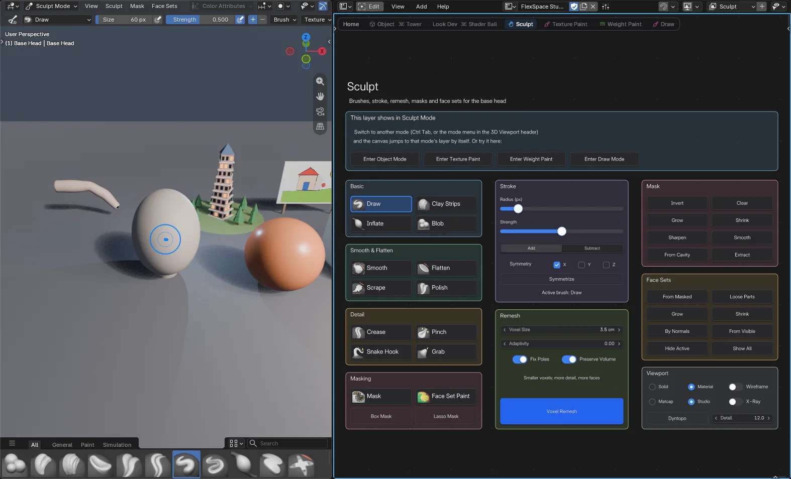
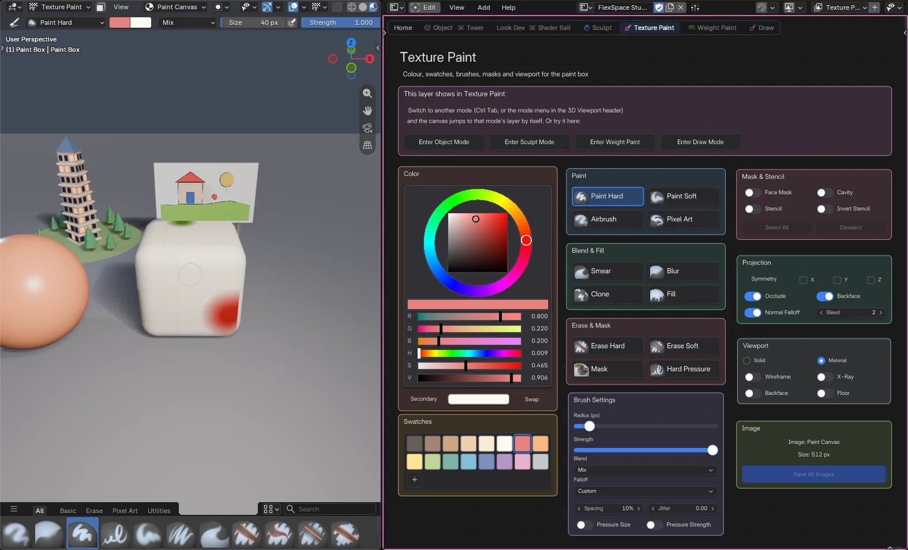
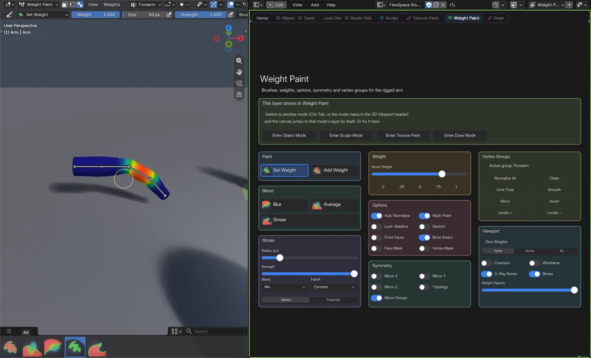
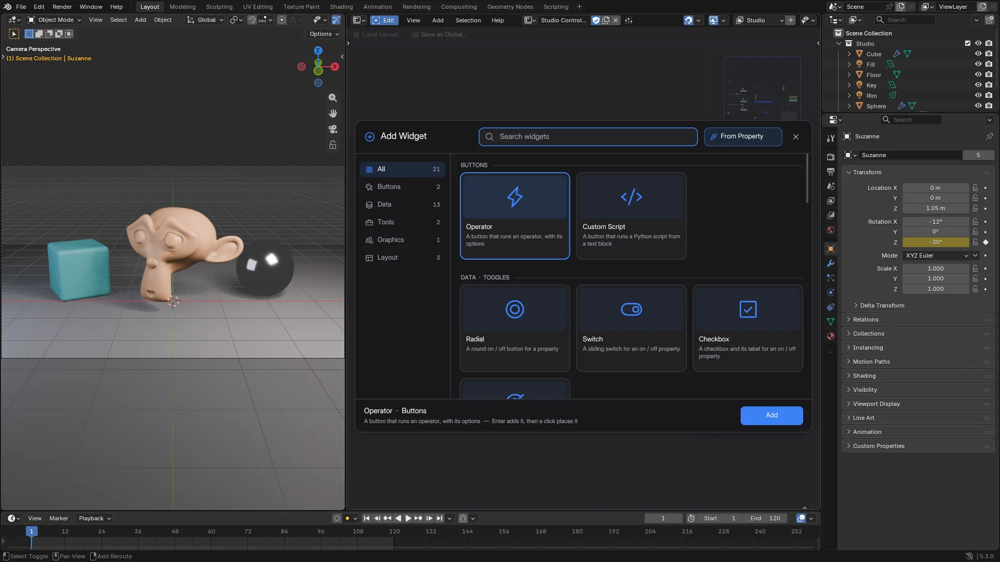
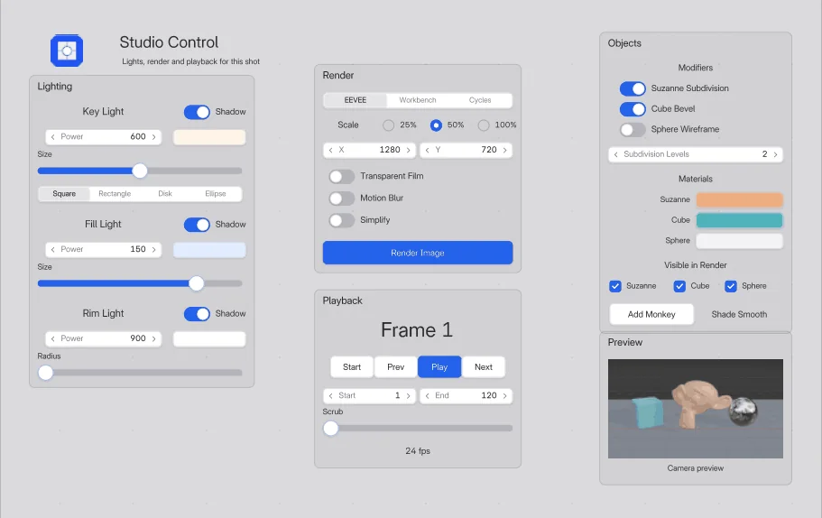
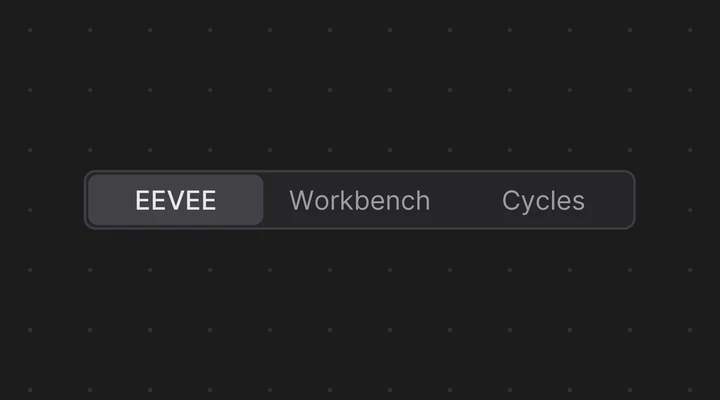
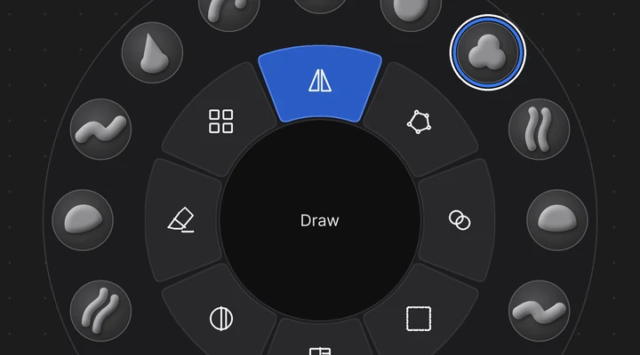
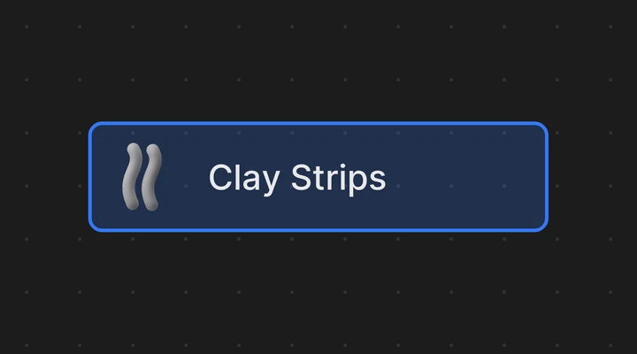
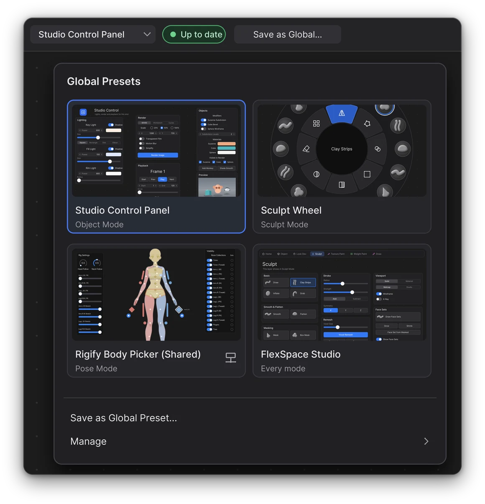

Lay it out.
Add widgets with Shift A, drag, resize, rotate, snap, group and frame them.
Buttons, sliders, toggles, colour pickers and a sculpt-ready Ring Menu on a canvas, bound to any property, operator or script. Plus an Armature Picker for any rig.

Tab Edit ↔ Live Shift A Add a widget Right-click Bind with From Property I Key it
Blender 5.3+Built as an extension
Demo files includedEach opens in its own window
Full docsOnline and inside Blender
Public issue trackerReport a Bug from Blender
GPL-3.0Open licence
Screen recordings and screenshots taken in Blender, most of them with the demo files that come with FlexSpace. Click any of them to see it bigger.
The Studio Control Panel, the FlexSpace Studio layers, the Add Widget browser, the Sunset theme and the Light appearance.
 Screenshot
Screenshot
 Screenshot
Screenshot

Screenshot
Screenshot
Screenshot Screenshot
Screenshot

Screenshot Screenshot
Screenshot

ScreenshotPick Flex Space in any area's Editor Type menu and click New. Build the layout, then use it, in the same place.
Add widgets with Shift A, drag, resize, rotate, snap, group and frame them.
Click buttons, drag sliders, flip toggles. Every change is one undo step.
Lights, render settings, playback, modifiers, materials: put the controls you reach for on one canvas, in the order that makes sense to you. Buttons run operators or your own Python scripts; sliders, number fields, toggles and enums drive any property.
Press Shift A > From Property, right-click any property in Blender, and the right widget appears, already bound and labelled. Widgets show Blender's animation colours, I keys them, and Auto Keying just works.
active_object.data.energy a light's power: the active light's, or a pinned one's

Give each layer its moment: always, in one Blender mode, for one object, or for one object in one mode. Switch to Sculpt Mode and your sculpt layer is there; select the tower and its Geometry Nodes controls show up.

Brushes in the outer ring, toggles and operators in the inner ring, the active brush named in the core. It lives on the canvas: no pie to summon, no menu to close. Fill it with every Essentials brush in one click and page through the rest.
Also on the canvas: Color Picker, Color Palette and Brush Picker.
Smart snapping to edges, centres, equal gaps and the grid. A Selection Bar to align, distribute and match sizes. Frames, groups and Flex Boxes keep it tidy; copy and paste work across canvases of the same kind.
G R S move, rotate, scale Ctrl G group Ctrl J frame

A picker is a canvas of buttons that select the bones of your rig. It's saved with the armature, so it travels when you link or append the rig, and your Pose Mode keys keep working over it. Using Rigify? Add a full Humanoid Body picker (body, hands and feet) in one step.
Left Right Centre Root

Show a widget only while a property is on with Visible When, or grey it out with Disabled When. On a frame or a Flex Box, everything inside follows.

Shift A, start typing, Enter. Click to place it. Widgets the layer's mode can't take are dimmed, and the panel says why.

The top bar counts them. One click frames the next one.
Canvas keys come first; everything else goes to Blender's keymap, custom ones included.
A slider drag, a toggle click, a paste: one step each. Bound widgets show Blender's animation colours.
Into this or another canvas of the same kind, even in another file.
Nine finished scenes, from a studio control panel to Rigify body pickers. Each opens in its own window, as a copy: your file stays untouched.
Rest on a widget for its operator or property, its data path, and why it can't run.
Versions, system and recent errors filled in for you. You review it on GitHub before you submit it.

Switches an on / off property, or sets an enum or integer value.

Drag along a bar to change a number.

Picks one value of an enum or integer.

Brushes, toggles and operators in a ring, like a sculpt wheel.

Edits a colour right on the canvas.

Layers, material slots, vertex groups and other lists as rows you can click.

Makes one brush the active brush.

A pad that drives two properties at once.
The theme sets the colours, shapes and type of every widget, on every canvas. Appearance follows Blender's theme (Auto), or stays Dark or Light.
In the header: View > Theme


Save a canvas as a global preset and add it to any project. Linked canvases know when the preset changed, keep your local edits until you choose, and can restore any of the last 5 versions. Export a .flexspace file, or point your team at a shared presets folder.
.flexspace export and import
.flexspace preset files, shared presets folderBlender 5.3 or newer. FlexSpace is a Blender extension: install the zip from Edit > Preferences > Get Extensions > Install from Disk...
Yes. FlexSpace comes with two canvases: Flex Space for control panels and Armature Picker for rigs. About the picker.
Any armature works: import selected bones and place their buttons. Rigify rigs get a full Humanoid Body picker in one step. Buttons follow renamed bones, and Repair Bone Bindings fixes the rest.
Yes. Save a canvas as a global preset, export it as a .flexspace file, or set a shared presets folder on a network drive.
Yes. The canvas uses its own keys first; any other key goes to Blender's keymap, Industry Compatible and custom bindings included.
Yes, with a Custom Script button. Buttons from an untrusted file ask before running.
Open Help > Report a Bug... in the canvas header: it opens a GitHub issue with your versions and recent errors filled in. More on the Support page.
Start with a demo, then build the panel your workflow deserves.